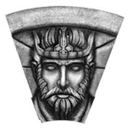
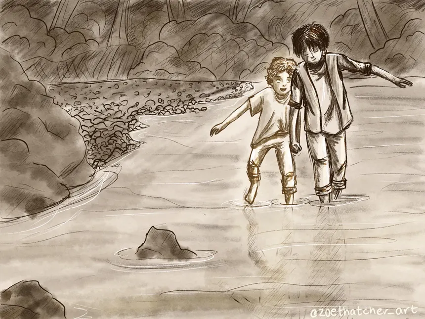
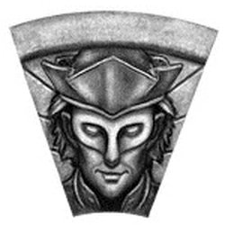
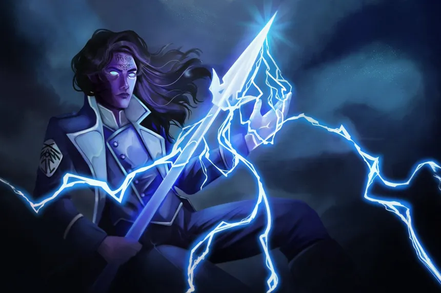
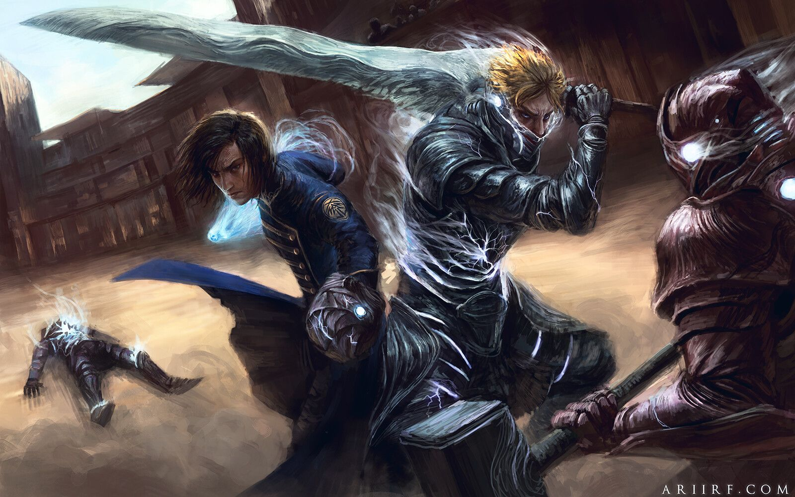

Stormblessed

Autor: Diego José Martínez Bravo
Autor: Diego José Martínez Bravo
Índice: Introducción Nudo Desenlace

En el apacible pueblo de Piedralar, Kaladin crece como aprendiz de cirujano bajo la estricta tutela de su padre, Lirin, quien le enseña que la vida es sagrada. Sin embargo, el joven siente una vocación instintiva por el arte de la lanza y la protección. Su destino da un vuelco cuando su ingenuo hermano menor, Tien, es reclutado forzosamente para la guerra, obligando a Kaladin a abandonar la medicina y alistarse voluntariamente para servir como su escudo.

En medio de la brutalidad del campo de batalla, Kaladin fracasa en su promesa y Tien es asesinado ante sus propios ojos. Consumido por la culpa, se endurece y se transforma en un líder de escuadrón excepcional, obsesionado con no perder a un solo hombre más. Su destreza marcial alcanza su apogeo cuando logra lo imposible: derribar a un Portador de Esquirlada enemigo para salvar a su comandante, ganando el derecho a una espada mágica de valor incalculable.
 La hazaña culmina en traición. El brillante señor Amaram, codiciando la espada esquirlada para sí mismo,
asesina a sangre fría a todos los hombres del escuadrón de Kaladin para eliminar testigos. Para silenciar a Kaladin sin convertirlo en mártir,
Amaram lo acusa de insubordinación, lo marca en la frente con el glifo de esclavo peligroso y lo vende, condenándolo a marchar hacia el infierno de los puentes en las Llanuras Quebradas.
La hazaña culmina en traición. El brillante señor Amaram, codiciando la espada esquirlada para sí mismo,
asesina a sangre fría a todos los hombres del escuadrón de Kaladin para eliminar testigos. Para silenciar a Kaladin sin convertirlo en mártir,
Amaram lo acusa de insubordinación, lo marca en la frente con el glifo de esclavo peligroso y lo vende, condenándolo a marchar hacia el infierno de los puentes en las Llanuras Quebradas.
